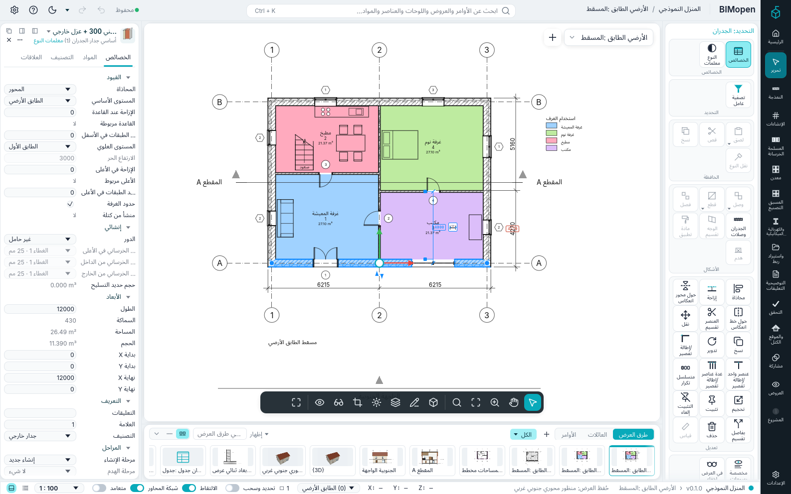
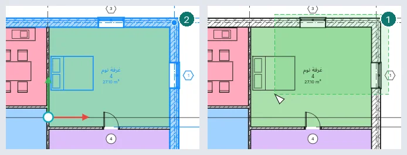
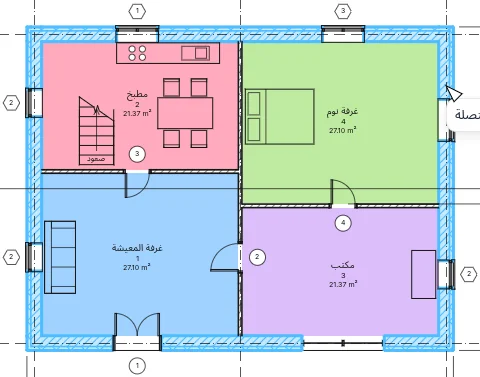
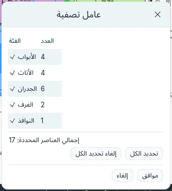
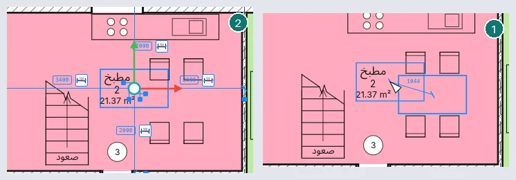
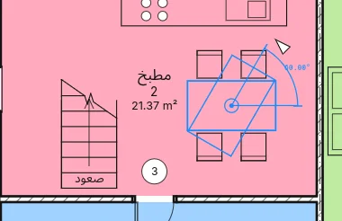

التحديد والتعديل
قبل معظم التعديلات تحدد ما تريد تغييره. يصف هذا الفصل كيف تُبرز العناصر وتُحدَّد، وكيف يُضبط التحديد، وكيف تُسحب العناصر المحددة، وأدوات مجموعة تعديل. يعمل كل ذلك بالطريقة نفسها في تطبيق سطح المكتب وفي المتصفح.
الإبراز والتحديد

حرّك المؤشر فوق عنصر: تُرسم خطوطه أعرض، ويسميه شريط الحالة أسفل النافذة (الفئة والنوع، مثل الجدران : جدار خارجي…)، وبعد لحظة تظهر الكلمات نفسها تحت المؤشر. انقر لتحديد العنصر المبرز. يُرسم العنصر المحدد بلون التحديد في كل عرض يظهر فيه، ويبيّن العدد في طرف شريط الحالة كم عنصرًا محددًا.
النقر بالزر الأيمن على عنصر يحدده ويفتح القائمة السياقية. ويمسح Esc، أو النقر في موضع فارغ، التحديد.
| لكي… | افعل ما يلي |
|---|---|
| تضيف عنصرًا إلى التحديد | Ctrl + نقرة |
| تُخرج عنصرًا من التحديد | Shift + نقرة |
| تحدد ما يقع بالكامل داخل نافذة | اسحب من اليسار إلى اليمين |
| تحدد ما تلمسه نافذة | اسحب من اليمين إلى اليسار (تكون النافذة متقطعة) |
| تضيف ما تلتقطه نافذة، أو تُخرجه | اسحب مع Ctrl، أو مع Shift |
| تحدد من جديد ما كان محددًا من قبل | Ctrl+Left، أو النقر بالزر الأيمن ▸ تحديد السابق |

تعمل النوافذ في المساقط والمقاطع واللوحات والعروض ثلاثية الأبعاد. في العرض ثلاثي الأبعاد يحدد الزر الأيسر؛ ويقوم الزر الأيمن بالدوران المداري والزر الأوسط بتحريك العرض (انظر الواجهة).
العناصر المتقاربة: TAB
حين تكون العناصر متقاربة أو بعضها فوق بعض، قد لا يكون العنصر المبرز هو الذي تريده. أبقِ المؤشر ثابتًا واضغط Tab: يُبرز العنصر التالي تحت المؤشر ويسميه شريط الحالة. ويعود Shift+Tab إلى الوراء. انقر لتحديد العنصر المبرز. في العرض ثلاثي الأبعاد ينتقل Tab من أقرب عنصر إلى ما خلفه؛ وعلى اللوحة، بين العروض الموضوعة بعضها فوق بعض.
سلاسل الجدران والخطوط
الجدران والخطوط المتصلة عند أطرافها تشكل سلسلة. والمؤشر على أحدها، يبرز Tab السلسلة كلها (يقول شريط الحالة سلسلة من n عناصر متصلة)؛ وتحددها نقرة. قد تجمع السلسلة جدرانًا مع فواصل الغرف وحدود المساحات؛ وتشكل خطوط التفاصيل سلاسل مع خطوط التفاصيل في عرضها. وحيث يلتقي ثلاثة أو أكثر، تستمر السلسلة على امتداد ما يصنع أصغر زاوية مع الأخير؛ والجدار الذي يتوقف عند جدار آخر بين طرفيه يمد السلسلة على امتداد ذلك الجدار.

جزء من سلسلة. حدد العنصر الأول من الجزء، وحرّك المؤشر فوق الأخير واضغط Tab: تُبرز العناصر الواقعة بينهما. ويبرز Tab مرة ثانية السلسلة كلها، وثالثة العنصر الأخير وحده. انقر لتحديد ما هو مبرز. وفي السلسلة المغلقة يدور الجزء من الجهة التي يقع فيها المؤشر: قرب طرف العنصر الأخير الذي يبلغه ذلك الاتجاه أولًا.
عناصر متصلة في نقطة. حدد عنصرًا وأبقِ المؤشر عليه، قرب طرف تتصل به عناصر أخرى. يبرزه Tab مع أقرب العناصر المتصلة هناك؛ وTab مرة أخرى، كل العناصر المتصلة هناك. انقر لتحديدها.
سلسلة محددة. حيث يلتقي جداران أو خطان محددان يظهر مقبض مستدير. اسحبه لنقل الوصلة: تتحرك الأطراف المحددة هناك معًا وتبقى متصلة؛ وتبقى العناصر غير المحددة في مكانها. اسحب السلسلة مع Shift لنقلها كلها، أفقيًا أو رأسيًا؛ واسحبها مع Ctrl لوضع نسخة منها.
تصفية التحديد
انقر العدد في شريط الحالة، أو عامل التصفية في البطاقة السياقية، لفتح عامل التصفية. يعرض فئات التحديد، وعدد عناصر كل منها، والإجمالي. ألغِ علامة فئة لإخراج عناصرها: يتبع التحديد والعدد في شريط الحالة فورًا. يضع تحديد الكل وإلغاء تحديد الكل العلامة على كل الفئات أو يزيلانها. يحتفظ موافق بالتحديد، ويعيد إلغاء التحديد الذي بدأت به.

تحديد كل المثيلات
انقر بالزر الأيمن على عنصر ▸ تحديد كل المثيلات، ثم المرئية في العرض (عناصر النوع نفسه
الظاهرة في العرض النشط) أو في المشروع بأكمله. وكتابة SA ثم Enter تفعل ما تفعله
المرئية في العرض. يجب أن يكون للعنصر نوع: الغرف، مثلًا، ليس لها نوع.
سحب العناصر
اسحب عنصرًا محددًا لنقله؛ يتحرك التحديد كله معًا، ويُتراجع عن السحب بضغطة Ctrl+Z واحدة. يُظهر بعد مؤقت النقل، ويُظهر شريط الحالة طوله (نقل: 1500). ومع تشغيل تحديد وسحب في شريط الحالة، يمكن سحب عنصر دون تحديده أولًا؛ ومع إطفائه، يرسم السحب الذي يبدأ على عنصر غير محدد نافذة.
- الجدار المتصل عند طرفيه بجدران غير محددة يتحرك عموديًا على نفسه فقط، وتمتد الجدران المتصلة به لتبقى متصلة. وتتبعه كذلك الجدران التي تتوقف عنده. اضغط Shift لنقله بحرية؛ وتتبعه الجدران المتصلة مع ذلك.
- أي عنصر آخر يتحرك بحرية؛ اضغط Shift لإبقاء النقل أفقيًا أو رأسيًا.
- تتحرك الأبواب والنوافذ مع جدارها وتحافظ على موضعها على امتداده. وإذا سُحبت وحدها انزلقت على الجدار؛ وإذا أُفلتت على جدار آخر انتقلت إليه.
- اضغط Ctrl عند بدء السحب لوضع نسخة بدلًا من ذلك.
تُسحب العناصر في المساقط والمقاطع والواجهات (على امتداد العرض)، وعلى اللوحات (العروض)، وفي العروض ثلاثية الأبعاد حيث تتحرك على المستوى الأفقي الذي أمسكتها عنده. وتنقل مفاتيح الأسهم التحديد خطوة صغيرة مقرَّبة إلى قيمة مرتبة بحسب تكبير العرض؛ ومع Shift عشر خطوات.
أدوات التعديل
لمجموعة تعديل في البطاقة السياقية ثلاثة صفوف: محاذاة، إزاحة، انعكاس حول محور، انعكاس حول خط، تقسيم العنصر، تقسيم بفاصل؛ نقل، نسخ، تدوير، تقصير/إطالة، تقصير/إطالة عنصر واحد، تقصير/إطالة عدة عناصر؛ تكرار متسلسل، تحجيم، تثبيت، إلغاء التثبيت، حذف. يقول شريط الحالة ما تنتظره كل أداة بعد ذلك، ويعرض شريط الخيارات خياراتها. يلغي Esc الخطوة الجارية؛ وإذا ضُغط مرة أخرى أنهى الأداة.
تعمل نقل ونسخ وتدوير وانعكاس حول محور وانعكاس حول خط وتكرار متسلسل وتحجيم على التحديد. وإذا بدأت دون تحديد شيء، تتيح لك التحديد أولًا (نقرات، Ctrl، نوافذ، Tab)، ثم تتابع حين تضغط Enter أو النهاية في شريط الخيارات.
تعمل نقل ونسخ وتدوير أيضًا في العروض ثلاثية الأبعاد: تؤخذ نقاطها على مستوى المنسوب الذي يُنقر.
قبل كل نقرة تُظهر الأداة ما ستفعله النقرة: التحديد مرسومًا حيث سيذهب (منقولًا أو منسوخًا أو مُدارًا أو معكوسًا حول المحور تحت المؤشر أو مُزاحًا إلى جهة المؤشر أو محاذيًا للمرجع)، يتبع المؤشر، وبجانبه المسافة أو الزاوية.
حيث تطلب أداة نقطة ثانية، يمكنك أن تكتب مسافة (أو زاوية) وتضغط Enter: تظهر بجوار المؤشر أثناء الكتابة، وتُقاس باتجاه المؤشر.
نقل
انقر نقطة أساس، ثم الوجهة. تنتهي الأداة وتبقى العناصر محددة. الخيارات:

- تقييد: يكون النقل على امتداد الجدار المحدد أو عموديًا عليه (أفقيًا أو رأسيًا للعناصر الأخرى)؛
- فصل: لا تتبع الجدرانُ المتصلة الجدرانَ المنقولة، ويمكن نقل باب أو نافذة إلى جدار آخر؛
- نسخ: توضع نسخ بدلًا من ذلك؛ ومع متعدد نسخة عند كل نقرة حتى Esc.
نسخ
مثل نقل، لكن توضع نسخة. ومع متعدد نسخة عند كل نقرة حتى Esc؛ وتقييد كما في النقل.
تدوير
يظهر مركز الدوران في وسط التحديد؛ اسحبه لوضعه في مكان آخر. انقر الشعاع الأول ثم الثاني: يدور التحديد بالزاوية بينهما، ويُظهرها بعد زاوي مؤقت. وبدلًا من الشعاع الثاني اكتب الزاوية واضغط Enter، أو اكتبها في الزاوية في شريط الخيارات واضغط Enter. يدوّر نسخ نسخة؛ ودون فصل تتبع الجدرانُ المتصلة الجدرانَ المدوَّرة.

الانعكاس
انعكاس حول محور: انقر جدارًا أو شبكة أو خطًا محورًا. انعكاس حول خط: انقر نقطتين. يكون نسخ مفعّلًا: توضع نسخة معكوسة؛ ألغِ تفعيله لعكس العناصر نفسها.
تكرار متسلسل
خطي: انقر نقطتين. الرقم هو عدد العناصر كلها. مع النقل إلى: 2° تحدد النقطتان التباعد؛ ومع الأخير يذهب العنصر الأخير إلى النقطة الثانية وتتوزع البقية بالتساوي. يُبقي تقييد الاتجاه على امتداد التحديد أو عموديًا عليه.
شعاعي: اسحب المركز الذي تدور حوله النسخ، وانقر الشعاع الأول ثم الثاني (أو اكتب الزاوية واضغط Enter، وأيضًا في الزاوية). مع 2° تكون الزاوية بين المتجاورين، ومع الأخير هي الامتداد كله.
إزاحة
تنقل جدارًا أو خطًا عموديًا على نفسه، أو تضع نسخة منه (نسخ مفعّل).
- رقمي: اضبط إزاحة، ثم انقر العنصر من الجهة التي يجب أن يذهب إليها. اضغط Tab أولًا لإزاحة السلسلة كلها (من الفئة نفسها) دفعة واحدة: تبقى زواياها متصلة.
- رسومي: انقر العنصر (Tab للسلسلة)، ثم نقطتين: المسافة بينهما عموديًا على العنصر هي الإزاحة. ويمكنك كتابتها بدلًا من ذلك. ينسخ Ctrl.
محاذاة
انقر المرجع، ثم العنصر المراد محاذاته: يذهب وجه العنصر الأقرب إلى نقرتك إلى وجه المرجع الأقرب إلى نقرته. يختار التفضيل: أوجه الجدار أو محاور الجدار. بعد المحاذاة يظهر قفل على الوجه المحاذى: انقره لإبقاء الاثنين متحاذيين، فيتحرك الآخر حين يتحرك المرجع. ودون محاذاة متعددة تختار النقرة التالية مرجعًا جديدًا؛ ومعها (أو مع ضغط Ctrl) تحاذي عدة عناصر مع المرجع نفسه. يبدأ Esc مرة محاذاة جديدة، وينهي الأداة مرتين.
تقصير/إطالة
تُقص الجدران والخطوط أو تُمدد؛ انقر كل واحد من الجزء المراد إبقاؤه.
- تقصير/إطالة: عنصران يلتقيان بعدها في زاوية؛
- تقصير/إطالة عنصر واحد: الحد، ثم العنصر؛
- تقصير/إطالة عدة عناصر: الحد، ثم كل عنصر بالتتابع.
تقسيم العنصر والتقسيم بفاصل
تقسيم العنصر: انقر جدارًا أو خطًا حيث يجب أن يصبح اثنين. ومع حذف الجزء الداخلي انقر نقطتين: يُزال الجزء الواقع بينهما مع الأبواب والنوافذ التي فيه. تقسيم بفاصل: اضبط فجوة الوصلة ثم انقر: يبقى الجزآن على تلك المسافة.
تحجيم
يمكن تحجيم الجدران والخطوط (وموضع الأبعاد)؛ ومع تحديد أي شيء آخر لا تتاح تحجيم. رسومي: انقر نقطة الأصل، ثم نهاية متجه أول، ثم نهاية متجه ثانٍ: تُحجَّم العناصر بنسبة الطولين (ويمكنك كتابة الثاني). رقمي: اضبط معامل التحجيم ثم انقر نقطة الأصل. تحافظ الأبواب والنوافذ على بعدها عن منتصف جدارها.
التثبيت وإلغاء التثبيت
يُبقي تثبيت العناصر المحددة في مكانها: لا يمكن سحبها ولا نقلها بأداة ولا حذفها، وتقول رسالة ذلك. يُظهر العنصر المثبت دبوسًا حين يُحدَّد؛ انقر الدبوس، أو استخدم إلغاء التثبيت، لتحريره.
الحذف والتراجع والإعادة
يزيل حذف (أو المفتاح Del) التحديد وما يستضيفه؛ وتبقى العناصر المثبتة. يتراجع Ctrl+Z عن آخر تعديل ويعيده Ctrl+Y: كل أداة أو سحب أو نقل بالأسهم خطوة واحدة.
الاختصارات المكتوبة
اكتب الأحرف واضغط Enter: MV نقل، CO نسخ، RO تدوير، MM انعكاس حول محور، DM انعكاس حول خط، AR تكرار متسلسل، OF إزاحة، AL محاذاة، TR
تقصير/إطالة، SL تقسيم العنصر، SG تقسيم بفاصل، RE تحجيم. يثبّت PN
التحديد ويلغي UP تثبيته، ويحدد SA كل مثيلاته المرئية في العرض. وتسردها كلها اختصارات لوحة
المفاتيح.
غير متاح بعد
- Tab للوصول إلى جزء من عنصر: لوح أو قائم في جدار ستائري، أو جزء من جدار مكدس؛
- تحديد كل المثيلات من نوع في فهرس المشروع؛
- التجميع والربط في تكرار متسلسل؛
- تقسيم الجدران على امتداد خط أفقي في الواجهات والعروض ثلاثية الأبعاد؛
- القص والنسخ واللصق عبر الحافظة، ولصق محاذى، وإنشاء مماثل.